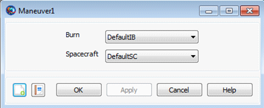

Maneuver — Perform an impulsive (instantaneous) maneuver
ManeuverBurnName(SpacecraftName)
The Maneuver command applies a selected ImpulsiveBurn to a selected Spacecraft. To perform an impulsive maneuver using the Maneuver command, you must create an ImpulsiveBurn. If you wish to model fuel depletion, you must associate a specific ChemicalTank hardware object with this ImpulsiveBurn and attach the ChemicalTank to the desired Spacecraft. See the Remarks and example shown below for more details.
See Also: ChemicalTank, ImpulsiveBurn, Spacecraft
| Option | Description | ||||||||||
|---|---|---|---|---|---|---|---|---|---|---|---|
| ImpulsiveBurnName | Allows the user to select which ImpulsiveBurn to apply. As an example, to maneuver DefaultSC using DefaultIB, the script line would appear as Maneuver DefaultIB(DefaultSC).
| ||||||||||
| SpacecraftName | Allows the user to select which Spacecraft to maneuver. The maneuver applied is specified by the ImpulsiveBurnName option above.
|
The Maneuver command dialog box, as shown below, allows you to select which previously created ImpulsiveBurn should be applied to which Spacecraft.
|  |
To model fuel depletion associated with your chosen ImpulsiveBurn, you must configure the ImpulsiveBurn object as follows:
Set the ImpulsiveBurn parameter, Decrement Mass, equal to true.
Select a ChemicalTank for the ImpulsiveBurn object and attach this selected ChemicalTank to the Spacecraft.
Set values for the ImpulsiveBurn parameters, Isp and GravitationalAccel, which are used to calculate, via the Rocket Equation, the mass depleted.
Create a default Spacecraft and ChemicalTank and attach the ChemicalTank to the Spacecraft. Perform a 100 m/s impulsive maneuver in the Earth VNB-V direction.
% Create default Spacecraft and ChemicalTank and attach the ChemicalTank
% to the Spacecraft.
Create Spacecraft DefaultSC
Create ChemicalTank FuelTank1
DefaultSC.Tanks = {FuelTank1}
% Set ChemicalTank1 parameters to default values
FuelTank1.AllowNegativeFuelMass = false
FuelTank1.FuelMass = 756
FuelTank1.Pressure = 1500
FuelTank1.Temperature = 20
FuelTank1.RefTemperature = 20
FuelTank1.Volume = 0.75
FuelTank1.FuelDensity = 1260
FuelTank1.PressureModel = PressureRegulated
% Create ImpulsiveBurn associated with the created ChemicalTank
Create ImpulsiveBurn IB
IB.CoordinateSystem = Local
IB.Origin = Earth
IB.Axes = VNB
IB.Element1 = 0.1
IB.Element2 = 0
IB.Element3 = 0
IB.DecrementMass = true
IB.Tank = {FuelTank1}
IB.Isp = 300
IB.GravitationalAccel = 9.810000000000001
BeginMissionSequence
% Apply impulsive maneuver to DefaultSC
Maneuver IB(DefaultSC)